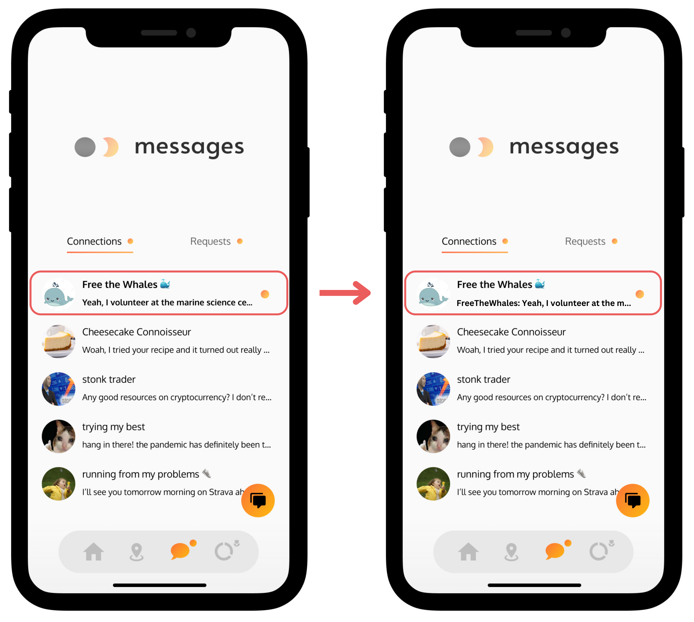

UBC Dawn Social Club App
Introduction
In my second year at the University of British Columbia, I encountered the UBC Dawn Social Club project during Club’s Day. The concept behind their friend-making app immediately piqued my interest. Aimed at helping students connect based purely on shared interests, the app emphasizes anonymity and genuine connection. By using aliases and non-descriptive profile pictures, coupled with an “Interest Pie Chart,” it does away with factors like gender, age, and appearance from the friend-making process, contrasting with the popular social media apps that most people use. This unique approach allows connections to form on the basis of common interests, with users free to share more personal details as they become comfortable. As an advocate for mental health initiatives in social media and technology, I felt a strong alignment with Dawn's mission and eagerly joined their software team.

My Role
Working on the software team was a rewarding experience. I gained proficiency in collaboration tools such as Asana, honed my design skills with Figma, learned to leverage app analytics tools like Mixpanel, and gained experience programming in Java as well. Engaging directly with our user community through Discord, I contributed to gathering feedback and implementing design changes first with Figma and then later using IntelliJ (coding in Java) to update the app itself. Collaborating with other team members and our leader, Vincent, was an invaluable part of this journey.
Messaging Page Optimization
One task that stands out was optimizing the messaging page. User feedback from Discord highlighted a common issue: difficulty in tracking who sent the last message in Direct Messages. Users wanted a clear indication of whether they needed to respond in a chat. Addressing this need, we enhanced the messaging page by prefixing messages with “Me:” or “other_user_id:” to clarify the message sender.
This task was particularly impactful as it marked my first real-world experience where user feedback directly informed design decisions. It underscored the importance of considering the user's perspective in every aspect of design and development, even in seemingly minor features.
Conclusion
My time with the Dawn team was enjoyable and fulfilling. Collaborating with teammates like Arjav Prasad and receiving mentorship from Vincent Kwong were highlights of this experience. The project not only enhanced my technical skills but also deepened my appreciation for user-centric design. I eagerly anticipate future projects from Vincent and look forward to potential collaborations.
Thank you for exploring my projects! Looking forward to future collaborations.